Introduction
This document has been produced as a set of guidelines to ensure a rich user experience for end users of the API Manager app.
API Manager 3.x.x is designed to material design visual langauage concepts and uses MATERIAL-UI (V 4.4.2) for UI components. You can use MUI component library for your user interface developments.
We will define set of guidelines so that user interfaces will be consistent throughout the application.
User Roles
API Publisher
An API publisher (API provider) is an API product manager. He/she manages a set of APIs and API products across the enterprise or business unit and controls the API lifecycle, subscriptions, and monetization aspects of an API or API product. The API Publisher can also analyze usage patterns for APIs and access all APIs statistics.
API Creator
An API Creator is a person in a technical role who understands the technical aspects of the API (interfaces, documentation, versions, etc.) and uses the API Publisher portal for the design and development of APIs. APIs created by an API creator are managed (lifecycle managed and productized) by an API product manager.
API Subscriber
A subscriber is a consumer of an API. He/she intends to develop one or more applications that consume APIs on the developer portal. A subscriber uses the API developer portal to discover APIs, read the documentation and forums, rate/comment on the APIs, subscribe, obtain keys, and finally use APIs from their applications.
Admin
The admin user is responsible for managing the admin portal, which includes tasks such as approving workflows, managing rate limiting policies, configuring emails for bot detection/alerts, viewing the state and health of APIs, etc. In addition, the admin user is also capable of carrying out general administrative tasks such as managing users, roles, databases, security, etc.
Customer Distribution by Region
Customer Distribution by Region as of January 2020
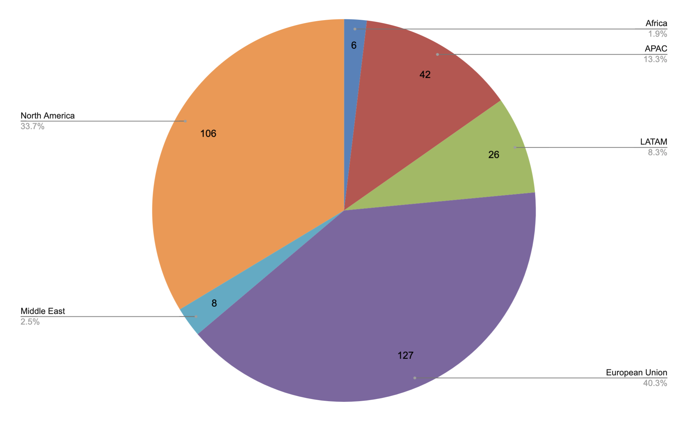Find more on APIM Customers - Region & Country
Prototypes
APIM4 Integration Services
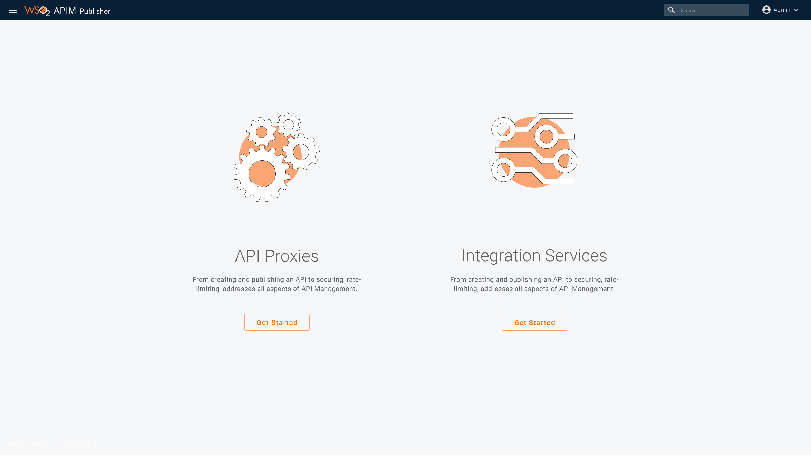Prototype Link of APIM4 Integration Services
Admin Portal
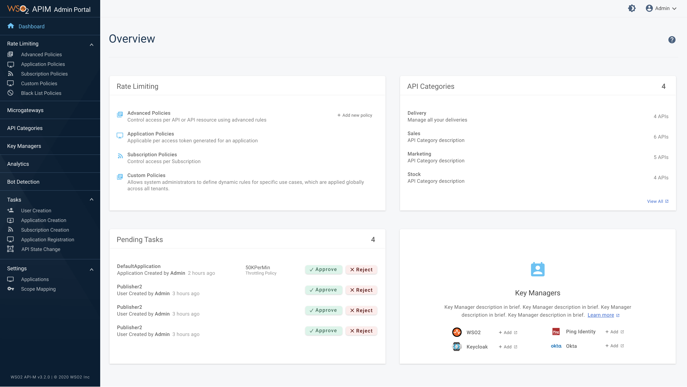Prototype Link of Admin Portal
Endpoint Registry
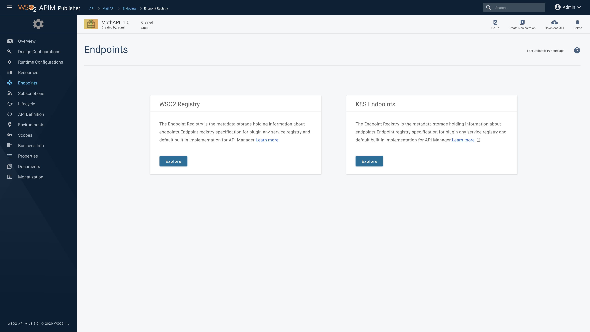Prototype Link of Endpoint Registry
Service Catalog
Prototype Link of Service Catalog
Accessibility Guidelines
The WSO2 APIM Developer Portal is now in Conformance to Level A and Level AA Success Criterias of the Conformance requirements of the Web Content Accessibility Guidelines 2.1 ( WCAG 2.1 ).
This will make content more accessible to a wider range of people with disabilities and more usable to users in general. With this all functionality of the Developer Portal, it is now operable through a keyboard interface. Color is not used as the only visual means of conveying information anymore. Content is now robust and understandable making it more user friendly and easy to use.
Accessibility Laws
- Section 508 of the Rehabilitation Act of 1973
- Section 255 of the Telecommunications Act of 1996
- The Americans with Disabilities Act of 1990 - ADA
- Information and Communication Technology (ICT) Final Standards and Guidelines - 2017
- EU Web Accessibility Directive - 2016
- European Accessibility Act of 2019
- Australia Disability Discrimination Act 1992 (DDA)
Find more on Accessibility Laws
WCAG Quick Reference
View large MapPerceivable
Information and user interface components must be presentable to users in ways they can perceive.
This principle addresses the fundamentals of information and content presentation, such as compositional sequence, colors, contrasts, contextual relationships and display of text
1.1 – Text Alternatives
Provide text alternatives for any non-text content. Add descriptive text for image alternate text. Group image and text to same element.
<a href="home.html">Zz
<img src="house.gif" alt="home page icon">
Go to the home page
</a>Use aria-label to provide labels for objects/groups
Use aria-labelledby to provide short description for a complex graphics
This example shows how to use the aria-labelledby attribute to provide a short text description for a read-only complex graphic of
an star rating pattern; the graphic is composed of several image elements. The text
alternative for the graphic is the label, visible on the page beneath the star pattern.
<div role="img" aria-labelledby="star_id">
<img src="fullstar.png" alt=""/>
<img src="fullstar.png" alt=""/>
<img src="fullstar.png" alt=""/>
<img src="fullstar.png" alt=""/>
<img src="emptystar.png" alt=""/>
</div>
<div id="star_id">4 of 5</div>
1.3 – Adaptable
Create content that can be presented in different ways (for example simpler layout) without losing information or structure.
ARIA11 Using ARIA landmarks to identify regions of a page. Landmarks are inserted into the page using the role attribute
- banner: A region that contains the prime heading or internal title of a page.
- complementary: Any section of the document that supports the main content, yet is separate and meaningful on its own.
- contentinfo: A region that contains information about the parent document such as copyrights and links to privacy statements.
- form: A region of the document that represents a collection of form-associated elements, some of which can represent editable values that can be submitted to a server for processing.
- main: Main content in a document. In almost all cases a page will have only one role="main".
- navigation: A collection of links suitable for use when navigating the document or related documents.
- search: The search tool of a Web document.
- application: A region declared as a web application, as opposed to a web document.
The following example shows how landmarks might be added
<div id="header" role="banner">A banner image and introductory title</div>
<div id="sitelookup" role="search">....</div>
<div id="nav" role="navigation">...a list of links here ... </div>
<div id="content" role="main"> ... Ottawa is the capital of Canada ...</div>
<div id="rightsideadvert" role="complementary">....an advertisement here...</div>
<div id="footer" role="contentinfo">(c)The Freedom Company, 123 Freedom Way, Helpville, USA</div>
<div id="leftnav" role="navigaton" aria-labelledby="leftnavheading">
<h2 id="leftnavheading">Institutional Links</h2>
<ul><li>...a list of links here ...</li> </ul></div>
<div id="rightnav" role="navigation" aria-labelledby="rightnavheading">
<h2 id="rightnavheading">Related topics</h2>
<ul><li>...a list of links here ...</li></ul></div>
ARIA12 Use role=heading to identify headings
<div role="heading">Global News items</div>
... a list of global news with editorial comment....
<h5>Fruit Trees</h5>
...
<h6>Apples</h6>
<p>Apples grow on trees in areas known as orchards...</p>
...
<div role="heading" aria-level="7">Jonagold/div>
<p>Jonagold is a cross between the Golden Delicious and Jonathan varieties...</p>
1.4 – Distinguishable
Make it easier for users to see and hear content including separating foreground from background.
Color is not used as the only visual means of conveying information, indicating an action, prompting a response, or distinguishing a visual element.
G14 Information conveyed by color differences is also available in text
A form using red color asterisk to indicate required fields, should state instructions at the top of the form
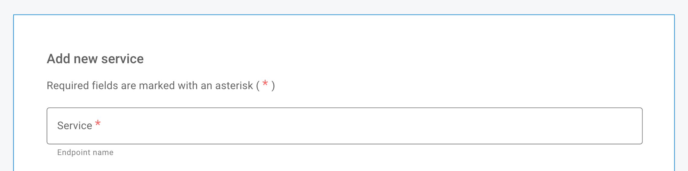G183 Using a contrast ratio of 3:1 with surrounding text and providing additional visual cues on focus for links or controls where color alone is used to identify them
Use colors that would provide 3:1 contrast with black words and 4.5:1 contrast with a white background
Refer to Links with a 3:1 contrast ratio with surrounding text
F81 Error fields should not be identified using color differences only.
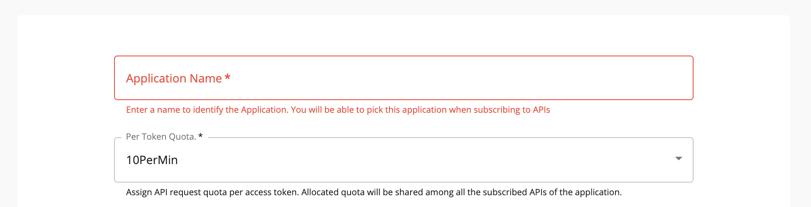G18 Ensure that a contrast ratio of at least 4.5:1 exists between text (and images of text) and background behind the text.
Operable
User interface components and navigation must be operable.
2.1.1 Keyboard
All functionality of the content is operable through a keyboard interface without requiring specific timings for individual keystrokes.
2.3 – Seizures and Physical Reactions
Do not design content in a way that is known to cause seizures or physical reactions.
G19 Ensuring that no component of the content flashes more than three times in any 1-second period.
2.4 – Navigable
Provide ways to help users navigate, find content, and determine where they are.
G88 Providing descriptive titles for Web pages.
<html xmlns="http://www.w3.org/1999/xhtml"> <head> <title>The World Wide Web Consortium</title> </head> <body> ... </body> </html>
2.4 – Navigable
Provide ways to help users navigate, find content, and determine where they are.
G88 Providing descriptive titles for Web pages.
<html xmlns="http://www.w3.org/1999/xhtml"> <head> <title>The World Wide Web Consortium</title> </head> <body> ... </body> </html>
H4 Create a logical tab order.
A Web page contains a search field in the upper right corner. The field is given tabindex="1" so that it will occur first in the tab order, even though it is not first in the content order.
G91 Provide link text that describes the purpose of a link.
G130 Provide descriptive headings.
Page should have a H1 heading
An HTML page that describes the range of tasks for disaster preparation may have the following headings:
<h1>Disaster preparation</h1>
<h2>Flood preparation</h2>
<h2>Fire preparation</h2>
G211 Match the accessible name to the visible label.
Understandable
Information and the operation of the user interface must be understandable.
H57 Set the page language attribute
G107 On Focus should not be used as action trigger.
G61 Navigation should be consistent across pages.
G197 Consistent identification for the same functionality,throught the application.
3.3 – Input Assistance
Help users avoid and correct mistakes.
ARIA18 Use aria-alertdialog to Identify Errors
This example shows how a notification using role="alertdialog" can be used to notify someone they have entered invalid information.
<div role="alertdialog" aria-labelledby="alertHeading" aria-describedby="alertText"> <h1 id="alertHeading">Error</h1> <div id="alertText">Employee's Birth Date is after their hire date. Please verify the birth date and hire date.</div> <button>Save and Continue</button> <button>Return to page and correct error</button> </div>
ARIA1 Use the aria-describedby property to provide a descriptive label for user interface controls
Sample form field using aria-describedby to associate instructions with form fields while there is a form label.
<form> <label for="fname">First name</label> <input name="" type="text" id="fname" aria-describedby="int2"> <p id="int2">A bit of instructions for this field linked with aria-describedby. </p> </form>
Robust
Content must be robust enough that it can be interpreted by a wide variety of user agents, including assistive technologies.
G134 Validate Web pages
F77 Avoid duplicate IDs
F70 Avoid incorrect use of start and end tags or attribute markup
ARIA14 Use aria-label to provide an invisible label where a visible label cannot be used
On a page, a link displays a pop-up box (a div) with additional information. The 'close' element is implemented as a button containing merely the letter 'x'. The property aria-label="close" is used to provide an accessible name to the button.
<div id="box">
This is a pop-up box.
<button aria-label="Close" onclick="document.getElementById('box').style.display='none';" class="close-button">X</button>
</div>
<div role="group" aria-labelledby="groupLabel"> <span id="groupLabel>Work Phone</span> +<input type="number" aria-label="country code"> <input type="number" aria-label="area code"> <input type="number" aria-label="subscriber number"> </div>
ARIA16 Use aria-labelledby to provide a name for user interface controls
The following is an example of aria-labelledby used on a simple text field to provide a label in a situation where there is no text
available for a dedicated label but there is other text on the page that can be used
to accurately label the control.
<input name="searchtxt" type="text" aria-labelledby="searchbtn"> <input name="searchbtn" id="searchbtn" type="submit" value="Search">
The following example of aria-labelledby with multiple references uses the label element. For additional detail on concatenating multiple sources of information into
a label with aria-labelledby, please view the technique ARIA9: Using aria-labelledby to concatenate a label from several text nodes.
<label id="l1" for="f3">Notify me</label> <select name="amt" id="f3" aria-labelledby="l1 f3 l2"> <option value="1">1</option> <option value="2">2</option> </select> <span id="l2" tabindex="-1">days in advance</span>
Note: The use of the label element is included for a number of reasons. If the user clicks on the text of the
label element, the corresponding form field will receive focus, which makes the clicking
target larger for people with dexterity problems. Also the label element will always be exposed via the accessibility API. A span could have been used (but if so, it should receive a tabindex="-1" so that it will
be exposed via the accessibility API in all versions of Internet Explorer). However,
a span would lose the advantage of the larger clickable region.
ARIA22 Use role=status to present status messages.
After a user presses a Search button, the page content is updated to include the results of the search, which are displayed in a section below the Search button. The change to content also includes the message "5 results returned" near the top of this new content. This text is given an appropriate role for a status message. A screen reader will announce "Five results returned".
<div role="status">5 results returned.</div>
ARIA23 Use rrole=log to identify sequential information updates.
<div id="chatRegion" role="log" aria-labelledby="chatHeading">
<h4 id="chatHeading">Chat History</h4>
<ul id="conversation">
<li>The latest chat message</li>
</ul>
</div>
User Interface Elements
Dialogs
Dialogs inform users about a task and can contain critical information, require decisions, or involve multiple tasks.
When to use
Dialogs should be used for:
- Errors that block an app’s normal operation
- Critical information that requires a specific user task, decision, or acknowledgement
Component |
Priority |
User action |
Snackbar |
Low priority |
Optional: Snackbars disappear automatically |
Banner |
Prominent, medium priority |
Optional: Banners remain until dismissed by the user, or if the state that caused the banner is resolved |
Dialog |
Highest priority |
Required: Dialogs block app usage until the user takes a dialog action or exits the dialog (if available) |
Title
A dialog’s purpose should be communicated by its title and button text.
Titles should:
- Contain a brief, clear statement or question
- Avoid apologies (“Sorry for the interruption”), alarm (“Warning!”), or ambiguity (“Are you sure?”)
Buttons
- Button panel should right align
- Place the confirming action last
Text Fields
Text fields allow users to enter text into a UI. They typically appear in forms and dialogs. Use outlined styling as the default styling for all the text fields.
Required text indicator
To indicate that a field is required, display an asterisk (*) next to the label text and mention near the form that asterisks indicate required fields.
- If some fields are required, indicate all required ones
- If most fields are required, indicate optional fields by displaying the word “optional” in parentheses next to the label text
- If all fields are required we can mention that near the form
Data Tables
Data tables display sets of data across rows and columns.
- All the columns containing text should left align
- Right align columns that contain numbers
- Use only icons for buttons when the action is clear
Infobars
Infobars provide a globally visible means of alerting users and publishing notifications.
-
Information: Presenting basic information or notifications to the user, which may include a button to perform a follow-up action.
Steppers
Steppers display progress through a sequence of logical and numbered steps. They may also be used for navigation.
-
Label: Labels should be placed below the step icon.
-
Buttons: Button panel should left align to content and conforming action should come last.
User eXperience Best Practices and Rules
We have listed the UX laws/best practices that you need to follow when you are designing the UI.
The Immutable Rules of UX
-
Field study
- Early focus on users and tasks
- Find out the users' characteristics
- Observe users doing their normal tasks
Study personas and write user stories, so that you’ll have a better understanding of the requirements
User story template - version 1.4Read more on User Stories
-
Paper Prototyping
Paper prototyping is the process of creating rough, often hand-sketched, drawings of a user interface, and using them in a usability test to gather feedback. Participants point to locations on the page that they would click, and screens are manually presented to the user based on the interactions they indicate.
Find more on Paper Prototyping
-
Iterative Design
Cyclic process of prototyping, testing, analyzing, and refine the product or process
Find more on The Immutable Rules of UX
10 Usability Heuristics for User Interface Design
A heuristic evaluation is a usability inspection method mainly used to identify any design issues associated with the user interface.
Jakob Nielsen’s heuristics are probably the most-used usability heuristics for user interface design.
-
Visibility of system status
The system should always keep users informed about what is going on, through appropriate feedback within reasonable time.
-
Match between system and the real world
The system should speak the users' language, with words, phrases and concepts familiar to the user, rather than system-oriented terms. Follow real-world conventions, making information appear in a natural and logical order.
-
User control and freedom
Users often choose system functions by mistake and will need a clearly marked "emergency exit" to leave the unwanted state without having to go through an extended dialogue. Support undo and redo.
-
Consistency and standards
Users should not have to wonder whether different words, situations, or actions mean the same thing. Follow platform conventions.
-
Error prevention
Even better than good error messages is a careful design which prevents a problem from occurring in the first place. Either eliminate error-prone conditions or check for them and present users with a confirmation option before they commit to the action.
-
Recognition rather than recall
Minimize the user's memory load by making objects, actions, and options visible. The user should not have to remember information from one part of the dialogue to another. Instructions for use of the system should be visible or easily retrievable whenever appropriate.
-
Flexibility and efficiency of use
Accelerators — unseen by the novice user — may often speed up the interaction for the expert user such that the system can cater to both inexperienced and experienced users. Allow users to tailor frequent actions.
-
Aesthetic and minimalist design
Dialogues should not contain information which is irrelevant or rarely needed. Every extra unit of information in a dialogue competes with the relevant units of information and diminishes their relative visibility.
-
Help users recognize, diagnose, and recover from errors
Error messages should be expressed in plain language (no codes), precisely indicate the problem, and constructively suggest a solution.
-
Help and documentation
Even though it is better if the system can be used without documentation, it may be necessary to provide help and documentation. Any such information should be easy to search, focused on the user's task, list concrete steps to be carried out, and not be too large.
Find more on Usability Heuristics
Fitts's Law
The time required to rapidly move to a target area is a function of the ratio between the distance to the target and the size of the target
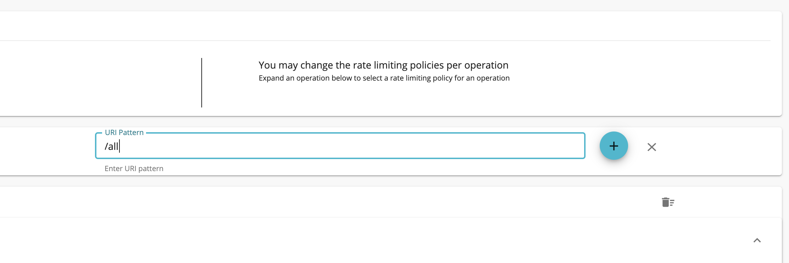Eg. Buttons to complete an action should be close beside active elements. Important actions should be larger so they’re easier to select.
Hick’s Law
The time it takes to make a decision increases as the number of options increases.
Simplify choices for the user by breaking down complex tasks into smaller steps. Avoid overwhelming users by highlighting the recommended options. Use progressive onboarding to minimize cognitive load for new users.
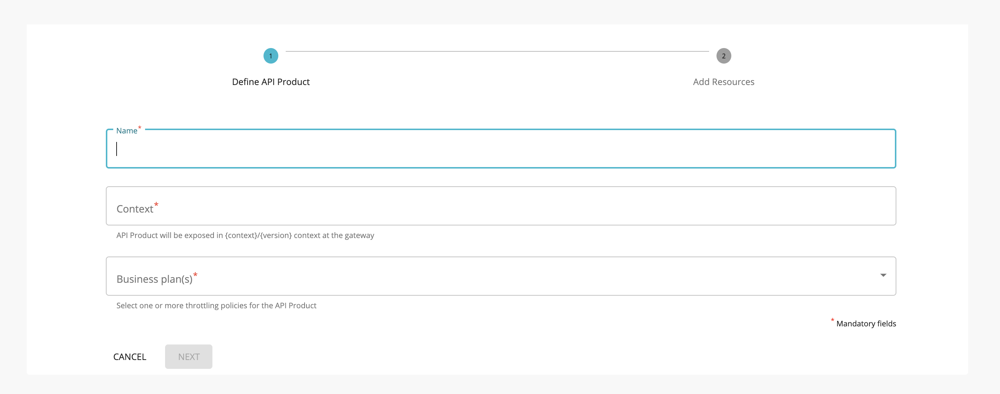Eg. If there are too many options in a dropdown, users will most likely go through all the options and the decision time increases. Also if there is too much information to gather, it's better to use a stepper and collect the information step by step.
Doherty Threshold
Productivity soars when a computer and its users interact at a pace (<400ms) that ensures that neither has to wait on the other.
Provide system feedback within 400ms to keep users' attention and increase productivity. Use perceived performance to increase response time and reduce the perception of waiting.
Jakob’s Law
Users spend most of their time on other sites. This means that users prefer your site to work the same way as all the other sites they already know.
Users will transfer expectations they have built around one familiar product to another that appears similar. By leveraging existing mental models, we can create superior user experiences in which the user can focus on their task rather than learning new models. Minimize discordance by empowering users to continue using a familiar version for a limited time.
Law of Common Region
Elements tend to be perceived into groups if they are sharing an area with a clearly defined boundary.
Adding a border around an element or group of elements is an easy way to create a common region. The common region can be created by defining a background behind an element or group of elements.
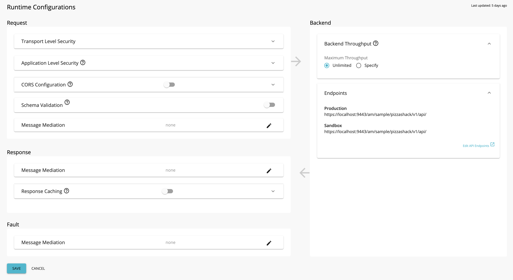Law of Proximity
Objects that are near, or proximate to each other, tend to be grouped together.
Proximity helps to establish a relationship with nearby objects. Proximity helps users understand and organize information faster and more efficiently.
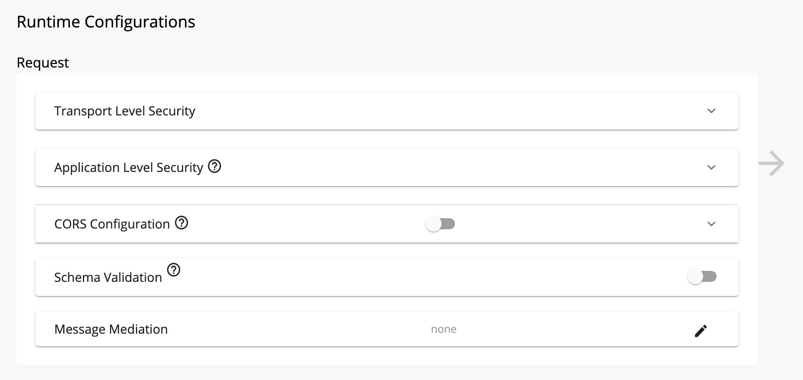Law of Similarity
The human eye tends to perceive similar elements in a design as a complete picture, shape, or group, even if those elements are separated.
Elements that have similar visual appearances seem to be more related.
Similarity helps us organize objects by their relatedness to other objects within a group and can be affected by the attributes of color, size, shape, and orientation.
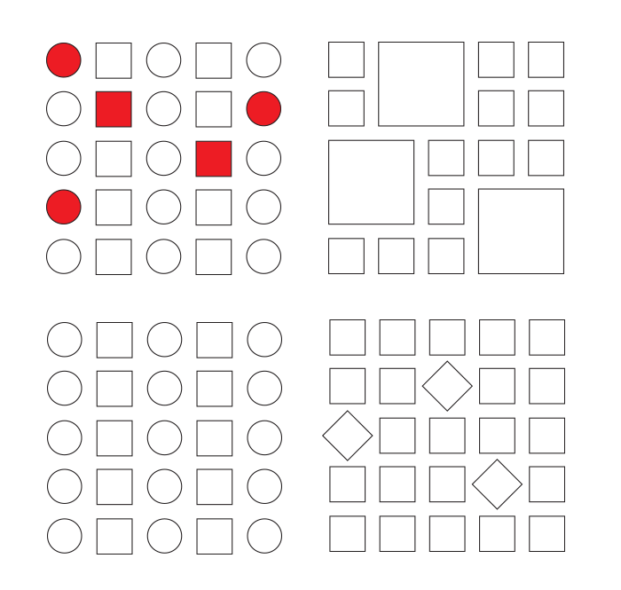Find more on Law of Similarity
Law of Uniform Connectedness
Elements that are visually connected are perceived as more related than elements with no connection.
Group functions of a similar nature so they are visually connected via colors, lines, frames, or other shapes.
- Connecting related links or buttons by adding them to the same drop-down menu.
- Using the same bullet shapes, colors, or numbering system (such as Roman numerals, Arabic numbers, etc.) on list items to group them with each other.
- Displaying functions of a similar nature, such as login, sign up, and forgotten password, so that they are related, inside a frame or colored rectangle.
Law of Continuation
The human eye follows the paths, lines, and curves of the design, and prefers to see a continuous flow of visual elements rather than separated objects.
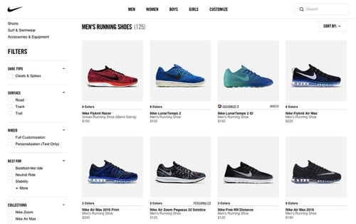When designing, we can use continuation to guide the eye through our designs, establishing relationships between elements as well as directing attention to specific groups or elements.
Miller’s Law
The average person can only keep 7 (plus or minus 2) items in their working memory.
Organize content into smaller chunks to help users process, understand, and memorize easily.
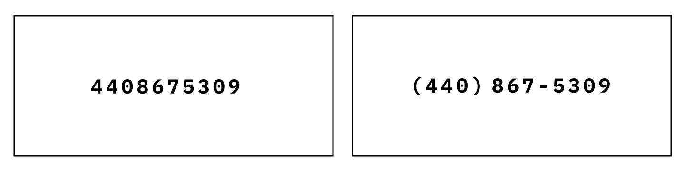Occam’s Razor
Among competing hypotheses that predict equally well, the one with the fewest assumptions should be selected.
Minimalist design or “Keep It Simple” “What is the minimum amount of UI that will allow the content to be found and effectively communicate to the user?”
“Perfection is achieved not when there is nothing more to add, but when there is nothing left to take away”. — Antoine de Saint-Exupéry
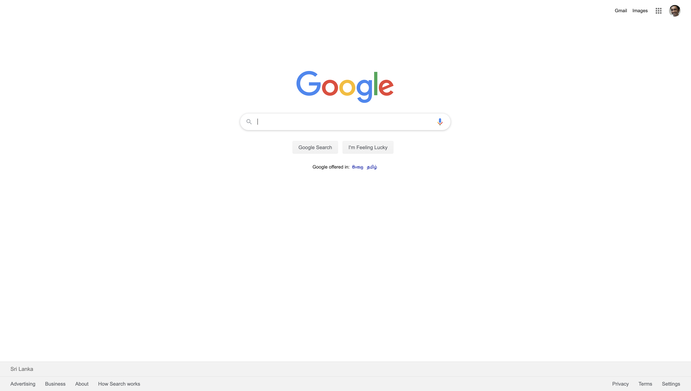Pareto Principle (80/20 Rule)
The Pareto principle states that, for many events, roughly 80% of the effects come from 20% of the causes.
only a few main variables affect the outcomes, and most other factors will return little impact
*Focus the majority of the effort on the areas that will bring the largest benefits to the most users.
Find more on Pareto Principle (80/20 Rule)
Parkinson’s Law
Any task will inflate until all of the available time is spent.
The amount of work required adjusts (usually increasing) to the time available for its completion.
Peak-End Rule
People judge an experience largely based on how they felt at its peak and at its end, rather than the total sum or average of every moment of the experience.
*Pay close attention to the most intense points and the final moments (the “end”) of the user journey. Identify the moments when your product is most helpful, valuable, or entertaining and design to make those moments even better. Remember that people recall negative experiences more vividly than positive ones.
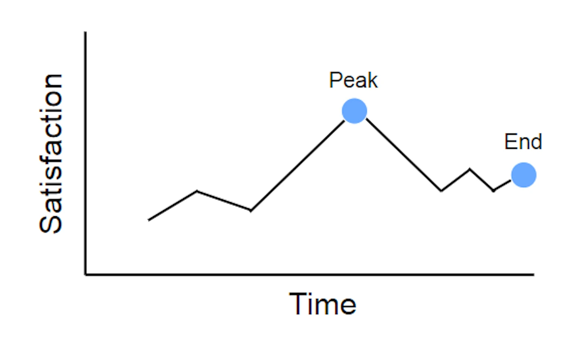Find more on Peak-End Rule
Serial Position Effect
Users have a propensity to best remember the first and last items in a series.
*Placing the least important items in the middle of lists can be helpful because these items tend to be stored less frequently in long-term and working memory. Positioning key actions on the far left and right within elements such as navigation can increase memorization.
Tesler’s Law
Tesler's Law, also known as The Law of Conservation of Complexity, states that for any system there is a certain amount of complexity that cannot be reduced.
Von Restorff Effect
The Von Restorff effect, also known as The Isolation Effect, predicts that when multiple similar objects are present, the one that differs from the rest is most likely to be remembered.
*Make important information or key actions visually distinctive.
Zeigarnik Effect
People remember uncompleted or interrupted tasks better than completed tasks.
Use progress bars for complex tasks to visually indicate when a task is incomplete, and thus increase the likelihood it will be completed.
The Halo Effect
The Halo Effect says that any one element in a user's experience with a company will rub off on their interpretation of other elements and their feelings about the company as a whole. Good design in one part of a website will make people like other parts better (and like the company better), but the opposite is also true.
Find more on The Halo Effect
F-Pattern in Reading Digital Content
Eyetracking research shows that people scan webpages and phone screens in various patterns, one of them being the shape of the letter F. We can do things to avoid F-pattern and make it much easier for people to scan text.
For example, use chunking of text, use bullets, and more important than anything, use headings and sub-headings within the text. And make those headings look different from the normal text: larger, a different color, bolder, a different typeface, any of these things can work.
And with that, users can scan to the headings and decide if those words are things that they're interested in. And if they are, they'll read the normal text below it. And if not, they'll read to the next heading, and that's a different pattern than we see
Find more on F-Pattern in Reading Digital Content
Law of Prägnanz
People will perceive and interpret ambiguous or complex images as the simplest form possible because it is the interpretation that requires the least cognitive effort of us.
The human eye likes to find simplicity and order in complex shapes because it prevents us from becoming overwhelmed with information. Research confirms that people are better able to visually process and remember simple figures than complex figures.
Find more on Law of Prägnanz
Aesthetic Usability Effect
Users often perceive aesthetically pleasing design as a more usable design.
Selection Options
Show all selection options if under 6, use radio buttons or any suitable element instead of dropdown.
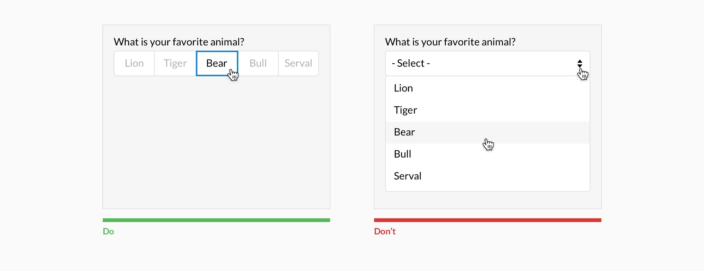Placing options in a selector drop-down requires two clicks, and hides the options. Use an input selector if there are